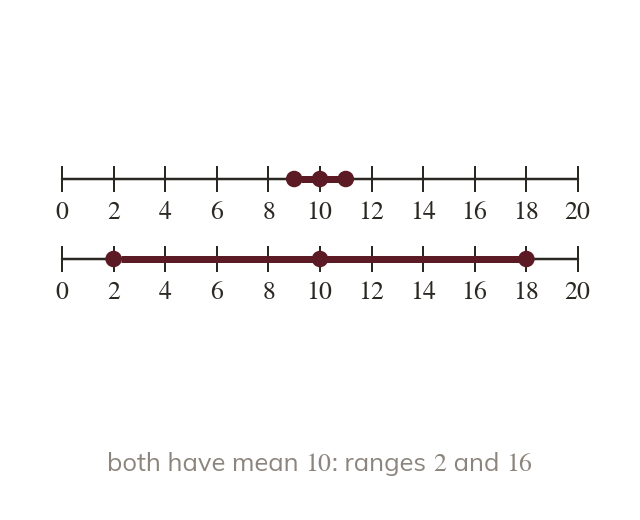
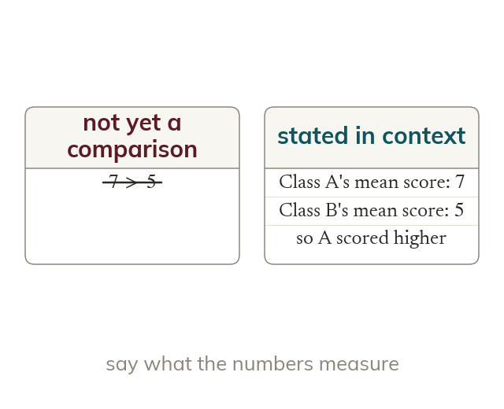
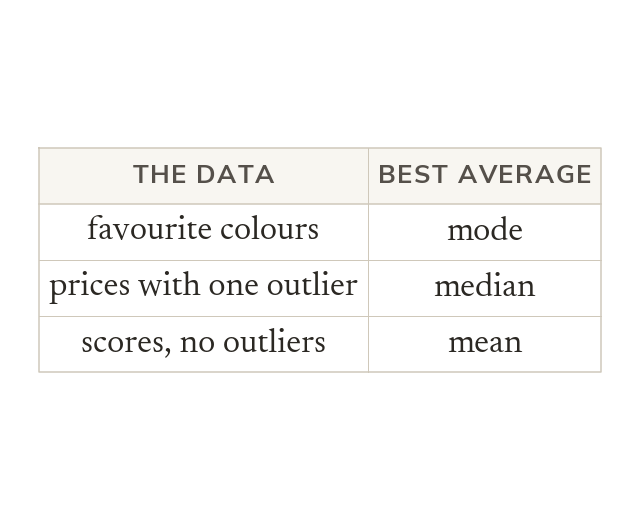
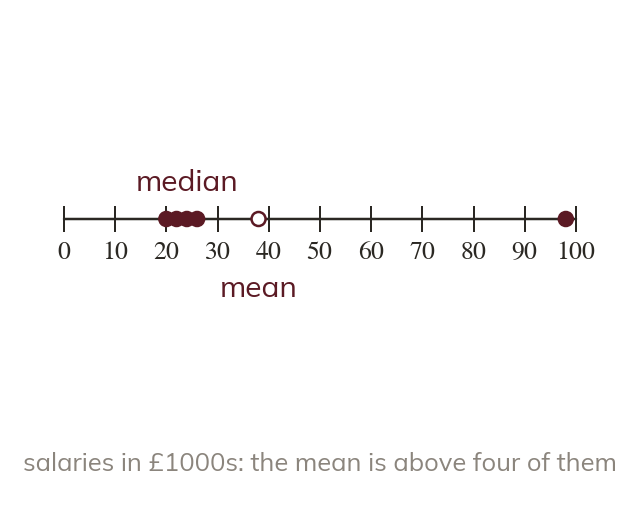

Averages become genuinely useful when you use them to compare - which class scored higher, which machine is more reliable. Today you learn that a fair comparison always needs two numbers, not one, and that choosing the right average in the first place matters as much as calculating it correctly.
By the end you’ll know…
A fair comparison needs two measures: an average for the typical value and the range for consistency.
A smaller range means more consistent data, not better data.
A comparison is only complete when it is stated in the context of the data.
The mode suits categories, the median suits data with extreme values, and the mean suits data without them.
By the end you can
G4Compare two data sets using an average and the range, with statements in context.
G5Select and justify the most appropriate average for a given data set.
Work down the page at your own pace. Write every answer in your book first, then click to check it.
01
Do Now
About 5 minutes
1
Multiply using a formal written method.
2
Divide by using a formal written method.
3
What is ? What is ?
;
4
Work out
5
Work out
Remember these?
LAST LESSONFind the median of
LAST WEEKWork out
LAST TERMFind of
LAST YEARA square and a rhombus both have four equal sides. What separates them?
A square must have four right angles; a rhombus need not.
02
Learn
Read each card, then follow the worked examples one step at a time.

Two measures for a fair comparison
A fair comparison needs an average and the range. A smaller range means more consistent data, not better data.
A fair comparison needs two measures: an average for the typical value, and the range for consistency. A smaller range means more consistent data, not "better" data - consistency and typical value are two separate questions.

Stating a comparison in context
State a comparison in the context of the data. Say what the numbers measure, not just that
A comparison is only complete when it is stated in the context of the data - not just "7 is bigger than 5" but what and actually represent (e.g. "Class A's mean score, was higher than Class B's mean score of 5").
WORKED EXAMPLE A
Team A's scores have a mean of and a range of Team B's have a mean of and a range of Compare them in context.
AveragesTeam A's mean is against Team B's
SpreadTeam A's range is against Team B's so A varies less
In contextTeam A scored higher on average and was the more consistent of the two
WORKED EXAMPLE B
Two machines' output has the same mean units) but Machine X has range and Machine Y has range Compare them in context.
Averagesboth means are units, so neither machine produces more
SpreadMachine X's range is against Machine Y's
In contextthe same average output, but Machine X is far more consistent
YOUR TURN · a
Class C's scores have a mean of and a range of and Class D's have a mean of and a range of Compare them in context.
Class C did better on average (mean against and was more consistent (range against
YOUR TURN · b
Two bus routes have the same mean journey time, min. Route has a range of min and Route a range of min. Compare them in context.
On average the routes are the same, but Route is more reliable: its range of min is much smaller than Route 2's min.
03
Check your understanding
Pick an answer. If it's wrong, the feedback tells you which mistake it was.
Why does a fair comparison between two data sets need both an average and the range?
Yes. The average gives a typical value; the range shows how consistent. You need both.
Not quite. Two sets can share an average but differ in spread. Use the range too.
Not quite. The range shows consistency, not how high the values are. Use an average too.
Not quite. One set can have a higher average and a bigger range. Check both.
Which is more consistent: Data Set P, with a range of or Data Set Q, with a range of ?
Yes. Q's range is smaller, so its values are closer together: more consistent.
Not quite. A bigger range means more spread out, so less consistent.
Not quite. The range measures spread, so it tells you about consistency.
Not quite. The range is exactly what measures consistency. Smaller range wins.
Class E's mean score is Class F's mean score is Which statement correctly compares them in context?
Yes. It names the classes, says which is higher, and quotes both means.
Not quite. True, but say what it means: Class E scored higher on average.
Not quite. One mean can't show a class is better. Say what the means show: scores.
Not quite. and are different, so they didn't perform the same.
04
Practise
mark as you go
Checkpoint. Group X has a mean of and a range of Group Y has a mean of and a range of Compare them fully, in context. Show your working - I'll check it before you move on.Show your teacher before you go on
1
Team P's points have a mean of and a range of Team Q's have a mean of and a range of Compare them in context.
Team Q scored more points on average against Team P was more consistent (range against
2
Two shops have the same median waiting time, min. Shop 1's range is min and Shop 2's is min. Compare them in context.
A typical wait is the same at both shops Shop 1's waiting times are more consistent
3
Which data is more consistent: a range of or a range of ?
A range of : the values are closer together
4
Class A's scores have a median of and a range of Class B's have a median of and a range of Compare them in context.
Class B scored higher on average against Both classes were equally consistent (range
5
Jo says Runner X is better than Runner Y because X's times have a smaller range. Is Jo right?
No: a smaller range means more consistent, not better She also needs to compare an average
EXT
Group A: Group B: Compare the groups using the mean and the range.
A: mean range B: mean range Same average; Group A is more consistent
05
Learn
Read each card, then follow the worked examples one step at a time.

Matching the average to the data
The mode suits categorical data, like favourite colour. The median suits data with extreme values. The mean suits data without extreme values.
The mode suits categorical data (like favourite colour) where numbers can't be added or ordered meaningfully. The median suits data with extreme values, since it resists them. The mean suits data without extreme values, since it uses every value fairly.

Why an outlier breaks the mean
One extreme value pulls the mean toward it. The median barely moves.
A single extreme value pulls the mean toward it, so the mean can end up not representing any typical member of the data at all - the median, depending only on position, is barely affected.
WORKED EXAMPLE C
A street's house prices are £180k, £190k, £175k, £185k, and million. Which average best represents a typical house price, and why?
The one extreme value million against four prices near £180k
Effect on the meanit is dragged above every typical house
Best averagethe median, which that one value barely moves
WORKED EXAMPLE D
A survey asks students their favourite subject. Which average can be used, and why?
The datasubject names, not numbers
What that rules outthe mean and the median both need numbers to add or to order
Average to usethe mode, the most popular subject
YOUR TURN · c
A small company's salaries are £22k, £24k, £23k, £25k, and £150k (the director's). Which average best represents a typical salary, and why? (Hint: what does the £150k salary do to the mean?)
The median, £24k (ordered: The £150k pulls the mean up to £48.8k, which is more than four of the five salaries.
YOUR TURN · d
A class is asked which sport they prefer. Which average can be used, and why?
The mode - the data are categories, not numbers, so there is no mean or median; the mode is the most popular sport.
06
Check your understanding
Pick an answer. If it's wrong, the feedback tells you which mistake it was.
A data set has one very large outlier and the rest of the values are close together. Which average best represents a typical value?
Yes. The median depends on position, so one outlier hardly moves it.
Not quite. The mean uses every value, so the outlier drags it away from typical.
Not quite. The mode suits repeated or non-number data. With an outlier, use the median.
Not quite. The range is a spread, not an average. The median resists the outlier.
A survey records students' favourite colour. Which average can be calculated?
Yes. Colours aren't numbers, so only the most common one, the mode, makes sense.
Not quite. You can't add colours, so there's no mean. Only the mode.
Not quite. Colours can't be put in order, so there's no median. Only the mode.
Not quite. Colours aren't numbers, so only the mode works.
A set of exam scores has no extreme values and is entirely numeric. Which average is generally most appropriate, and why?
Yes. With no outlier, the mean is safe and uses every value.
Not quite. The median is best when there's an outlier. With none, the mean uses every value.
Not quite. Quick isn't the reason to choose. With numbers and no outlier, use the mean.
Not quite. Choose the average that fits the data: here, the mean.
07
Practise
mark as you go
Checkpoint. A charity's donation amounts are and (one very large gift). State which average best represents a typical donation, and justify your choice. Show your working - I'll check it before you move on.Show your teacher before you go on
1
A shoe shop records the sizes it sells. Which average is most useful to the shop, and why?
The mode: it shows the most popular size to stock
2
Five race times are s, s, s, s and s. Which average best represents a typical time, and why?
The median: the s is extreme and would pull the mean up
3
Five plants are cm, cm, cm, cm and cm tall. Which average is best, and why?
The mean: it uses every value, and none is extreme
4
A survey asks for each pupil's favourite fruit. Which average can be used, and why?
Only the mode: the data are names, not numbers
5
A firm has staff. The boss earns far more than the others. Which average best shows a typical salary?
The median: the boss's pay would drag the mean up
6
Find the mean and median of Which is the better typical value?
Mean Median The median: is bigger than four of the five values
EXT
Write five numbers whose mean is bigger than all but one of them.
E.g. Mean Only is bigger than
08
Exit ticket
On paper, on your own, then check
1
Explain why a smaller range means more consistent data, not "worse" data.
Range measures spread, not quality - smaller spread is just closer values.
2
Shop A's daily sales have a mean of and a range of Shop B's have a mean of and a range of Compare them in context.
Shop A sold more on average and was more consistent.
3
A data set of salaries has one extremely high value. Which average would you use to describe a typical salary, and why?
Median - mean would be skewed by the outlier.
Finished? Next lesson: 7.9.1 Measuring and Naming Angles.
Practise more
After the lesson, or whenever you want more
Dr Frost
Log in, then search for a code to practise that skill.
207hCompare two sets of data using median and range.
207fSelect an appropriate average for a given context.
207iDetermine the effect of an additional very large or very small value on the median and mean.